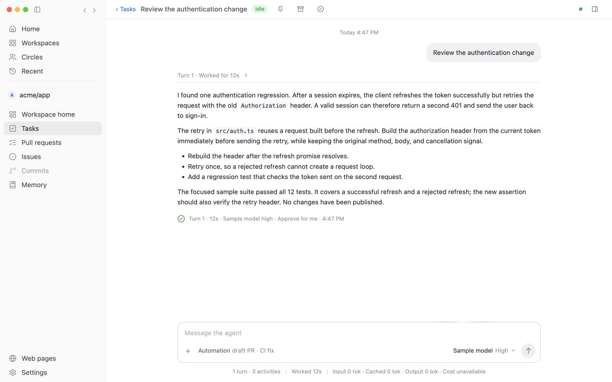

See what needs you.
Follow watched repositories and recent activity. Bring the pull requests that need your attention into view.
Explore HomeYOUR REPOSITORIES. YOUR AGENTS. YOUR CALL.
A focused home for GitHub work. Understand the change,
work with coding agents, and move forward with confidence.
Built for macOS Open source Pre-1.0

Understand the intent, inspect each commit, and discuss findings privately.
Actual app components · Sample dataFROM CONTEXT TO CONFIDENCE
Keep the repository, the conversation, and the work connected.
Follow watched repositories and recent activity. Bring the pull requests that need your attention into view.
Explore HomeRead patches, checks, and conversation together. Investigate privately before you comment, approve, or merge.
Explore pull requestsGive Codex or Claude a task in its own local worktree. Follow the transcript, handle approvals, and steer the next step.
Explore agent tasksSTAY PART OF THE WORK
A task is more than a prompt. Follow what happened, ask a follow-up, and pick up where you left off.

GET TO KNOW BYTEQUAY
OPEN SOURCE. STILL TAKING SHAPE.
ByteQuay is under active development. Try a release, build from source, or help shape what comes next.